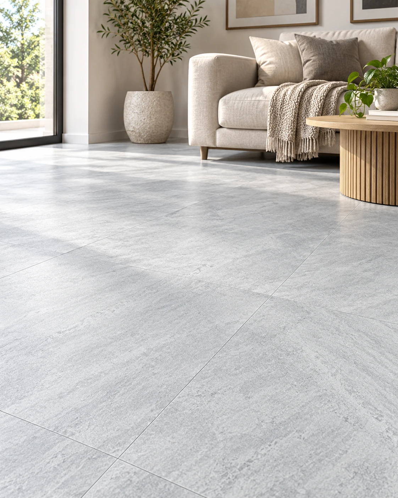

Piso autoadhesivo
Piso Autoadhesivo Cuadrado Gris 45,5x45,5 - Cubre 5m2
Piso autoadhesivo para renovar superficies compatibles con el sistema de colocación del proveedor. La ficha corresponde al diseño y formato indicados, con fotografías del producto. Datos del proveedor: Largo: 45,5 cm. Ancho: 45,5 cm. Espesor: 2 mm.
- Largo
- 45,5 cm
- Ancho
- 45,5 cm
- Espesor
- 2 mm
- Capa de uso
- 0,15 mm
- Rendimiento
- 5 m² por caja (24 baldosas)
- Tipo de uso
- residencial — bajo a mediano tránsito
Disponibilidad FORMA: En stock
Consultar precio
Consultar por WhatsAppConfirmamos precio, disponibilidad y entrega antes de cerrar el pedido.
MÁS OPCIONES